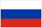
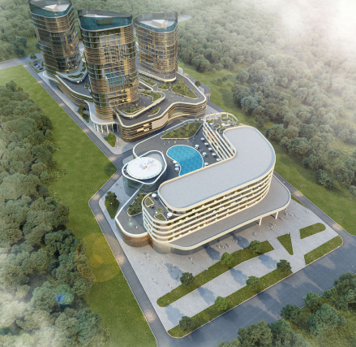
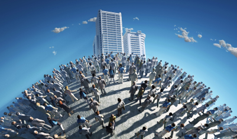

В ближайшее время проект Краснодарского метрополитена может быть включён в перечень реализуемых крупных инфраструктурных проектов на федеральном уровне. Краснодарский метрополитен - это, без сомнения, один из важнейших объектов города на ближайшее десятилетие.
Это социально-значимый проект, при реализации которого будет дополнительно создано более 5 000 высокооплачиваемых рабочих мест. На разных этапах реализации проекта дополнительными заказами будут загружены до 10 000 человек в смежных отраслях. Будут задействованы десятки сторон дополнительных организаций, проектные институты и бюро, предприятия машиностроения и энергетики и др.
Каждая из 50-ти станций Краснодарского метро представляет из себя 7-ми этажный многофункциональный центр, состоящий из 5-ти надземных этажей и 2-х подземных.
Как показывает практика, в регионах, где осуществляются такие крупные инфраструктурные проекты, значительно улучшается демографическая обстановка, растет благосостояние граждан, и как следствие, сокращается число разводов и растет рождаемость.
В таких центрах будут расположены спортивные секции, фитнес центры, муниципальные поликлиники и частные медицинские центры, гостиницы и предприятия общепита, детские клубы, музыкальные и художественные школы, офисные помещения.
Именно об этом говорил Президент Российской федерации В.В. Путин в своём послании Федеральному собранию, перечисляя меры, необходимые для преодоления демографического кризиса.